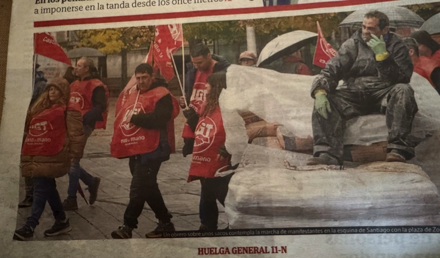

11 noviembre 2026
SOCIEDAD
Un dia de Huelga Nacional

El fotografo ha captado el momento que por si solo define una huelga.
La foto esta hecha en Valladolid y publicada por el periodico El Norte de Catilla en la portada.
Paso tiempo mirando la foto.
Miro se cara y me pregunto que pensara el currito, parado por el desfile con los sacos que aun tiene que descargar.
↑ Volver al inicio
16 noviembre 2026
Mitines
Un mitin en Valencia
¡A berrear que asciendes!.
La minstras, progres y femi, son gritonas, todavia me viene el eco de ¡Verguenza! ¡Verguenza!. de la ministra de las pulseras fallidas.
La minstra de Universidades, te juro que la hay, berrea sobre la dignidad de Oscar Puente, y el pueblo le corea.
¿Que gente, que votantes psoe estaba en el mitin?. Jaleaban la muerte de 116, personas.
Me pregunto que hubieran hecho, si fueran 300. Le harian hasta estatuas.
↑ Volver al inicio
15 noviembre 2026
Mitines
Mitin en Sevilla
Lucia termino la carrera de Fisica. El 17 de Enero vino a Madrid, a firmar un contrato
con una empresa que fabrica fisio sanitarios, habia realizado la entrevista un mes antes.
Fue con su abuelo, querian encontrar un sitio donde poder vivir. Encontro una habitacion en Vallecas,
cara, pero una buena habitacion. Tenian billetes para el Ave para el dia siguiente, dia 28.
Lucia esta contenta y el abuelo mas, sabe de su sacrificio para sacra la carrera.
Lucia desperto en una cama de hospital, ha estado sedada conco dias, no sabe lo que ha pasado, no tiene recuerdos.
Una doctora se acerca a su cabecera, la intenta tranquilizar, esta en la UCI de un hospital de Huelva, pero fuera de peligro.
Ha ocurrido un accidente de tren, pero no se mas, la informaran enseguida. Dentro de un par de dias la subiremos a planta.
No siente dolor pero no puede mover las pieras. Los recuerdos van llegando.
¡Abuelo!, grita, pero nadie la contesta, se acerca una enfermere, que inyecta algo en la bolsa de las medicinas.
Una sicologa la visita al dia siguiente, la va desgranado las notias. El abuelo murio en el acto, ya esta enterrado.
La administra un sedante, Lucia la hace un gesto, no quiere oir mas.
Lucia esta en una silla de ruedas, solo aguanta de pie diez minutos, unos pasos para pasar de la silla a la cama, o al servicio.
La empresa se ha portado muy bien con ella, el puesto es suyo, contrataran a alguine interino y veran como evoluciona, la silla de ruedas no sera impedimento
Nunca ha participado en politica. Ahora esta en la plataforma, esta convencida que se podia haber evitado y sabe que hay culpables.
Me ha enviado este video del sanchez y demas sonriendo y bailando. Su comentario me ha llegado al alma,Ya no tengo lagrimas.
↑ Volver al inicio